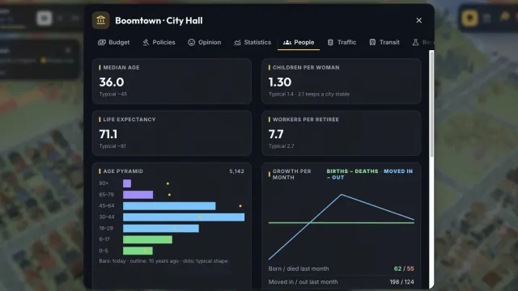
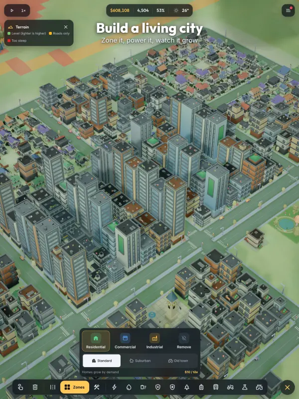

Tu ciudad, tus reglas: zonifica barrios, mantén las luces encendidas en olas de calor y heladas, alimenta a tus habitantes y mira cómo cobra vida el tráfico.
Juego de construir ciudades · iPhone · iPad · Android
Convierte un camino polvoriento en una metrópolis próspera.
Boomtown es un constructor de ciudades relajante pero profundo. Pinta casas, tiendas e industrias, conecta la electricidad y el agua, y mira cómo tus habitantes se mudan, forman familias, van al trabajo y te dicen exactamente lo que piensan.
Construye una ciudad viva
Zonifica, dale energía y mira cómo crece
Cada coche va a algún lugar: los viajeros eligen rutas, en hora punta se forman atascos y mejores carreteras o líneas de autobús y tren los solucionan.
Zonas residenciales, comerciales e industriales en estilo estándar, suburbano y casco antiguo.
Crece desde aldea hasta pueblo, ciudad y, finalmente, megaciudad.
Une una manzana entera de nueve parcelas en un rascacielos de nivel 4.
Una ciudad llena de vida
Parques, cafés y mil pequeños detalles
Parques con estanques, fuentes, senderos y bancos, además de árboles y parterres que plantas tú.
Los árboles se mecen con el viento, la ropa tendida ondea en los días de sol y los cafés sacan sus terrazas.
De noche los escaparates siguen encendidos, las vallas publicitarias brillan y los semáforos pasan de rojo a ámbar y a verde.
Vacas y ovejas pastan en las granjas, las chimeneas humean y al anochecer se encienden farolas y faros.
Las casas y tiendas que resisten años se cubren de hiedra y reciben una placa como edificios históricos.
Tranvías, autobuses y metro
Traza las líneas y míralas llenarse
Haz clic a lo largo de tus calles para trazar líneas de autobús y tranvía, con paradas por el camino.
Las líneas de metro excavan túneles bajo la ciudad, con entradas en cualquier acera.
Los hogares sin coche caminan o usan el transporte, y los pasajeros pueden hacer un transbordo.
Cada estación cuenta
La nieve, las olas de calor y las tormentas cambian cómo funciona tu ciudad
Las olas de calor disparan la demanda de aire acondicionado, las heladas necesitan calefacción.
Las nubes atenúan tus parques solares y las tormentas hacen girar tus aerogeneradores.
En invierno la nieve cubre la ciudad, en otoño los árboles se vuelven dorados y en verano llegan las cosechas.
Las nuevas ciudades siguen las estaciones de tu hemisferio con el calendario «Local», activado por defecto.

Generaciones que crecen
Los habitantes nacen, envejecen y transmiten su legado
Cada hogar tiene hijos, padres y abuelos que envejecen año tras año, y los jóvenes adultos se independizan para formar su propio hogar.
Las guarderías elevan la natalidad, los médicos la esperanza de vida, las escuelas se llenan y se vacían, y los cementerios se quedan poco a poco sin espacio.
Fija la edad de jubilación y la baja parental, y luego observa cómo cambia tu pirámide de edades una década después.
Granjas, minas y comercio
Cultiva alimentos, vende el excedente, excava mineral
Las granjas alimentan a tus habitantes: vende el excedente, guarda parte en una reserva de alimentos o paga importaciones.
Las minas extraen mineral de las montañas hasta que la veta se agota.
La industria de alta tecnología llega cuando tu ciudad está bien formada.
Descubre lo que necesitan tus habitantes
Los mapas de datos revelan tráfico, contaminación y valor del suelo
Los habitantes lo valoran todo: empleo, desplazamientos, seguridad, colegios, parques, ruido, contaminación y coste de la vida.
Toca cualquier edificio para ver cómo va y por qué no crece.
Mapas de datos aptos para daltónicos.
Convierte tu ciudad en un destino
Monumentos, cascos antiguos y calles peatonales atraen visitantes
Una noria, un estadio, una ópera, la Sky Tower y más atraen turistas, y un aeropuerto los trae en avión por cargamentos enteros.
Los hoteles cobran una tasa turística. Cuando están llenos, los visitantes alquilan pisos en los que tus habitantes ya no pueden vivir.
Las multitudes traen delincuencia, ruido y alquileres al alza, así que limita los alquileres de corta duración o duplica la tasa turística.
Y mucho más
Profundo cuando quieras
Tráfico & transporte
Cada coche elige su propia ruta. Los hogares sin coche caminan o usan el transporte público. Pon en marcha líneas de autobús, tranvía y tren, peatonaliza calles y abre un aeropuerto.
Políticas & presupuesto
Fija impuestos por zona, financia cada departamento, pide préstamos y elige entre 14 políticas.
Investigación & grandes proyectos
17 tecnologías, desde tranvías hasta energía nuclear, y maravillas como la Expo Mundial y el Centro Espacial.
Incendios, tormentas & protestas
Los incendios se propagan de casa en casa, las tormentas dañan edificios y los habitantes descontentos salen a la calle.
26 mapas de datos
Tráfico, contaminación, aguas subterráneas, viento, delincuencia, edad, visitantes y más, con modo para daltónicos.
Misiones & hitos
Ocho rangos de aldea a megaciudad, misiones con tiempo límite, 25 logros y noticias sorpresa.
Sin anunciosSin compras dentro de la appSin rastreoSe juega totalmente sin conexión
Pensado para el tacto
Diseñado para iPhone, iPad y Android
Coloca, previsualiza, confirma. Mantén pulsado cualquier botón para saber qué hace, deshaz tus últimos movimientos y activa el modo zurdo o una interfaz más grande (tamaño de la UI).
En iPhone y Android se juega en horizontal. El iPad también admite vertical.

Requisitos
Lo que necesitas
iPhone & iPad
iOS 15 o posterior.
Android
Android 7.0 (API 24) o posterior, teléfonos y tabletas.
Orientación
Horizontal en iPhone y Android. El iPad también admite vertical.